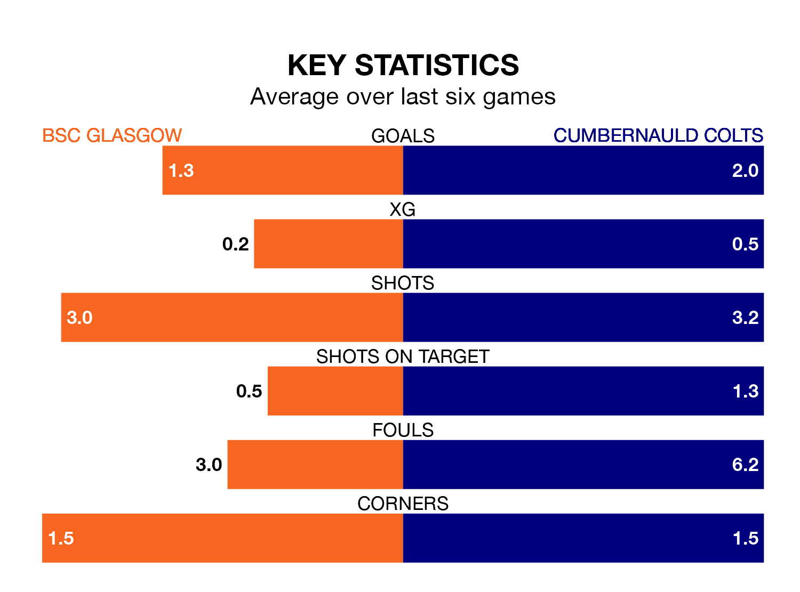

BSC Glasgow host Cumbernauld Colts in Saturday's match at the moreroom.com Stadium looking to bounce back from defeat last time out in Highland and Lowland Football Leagues.
BSC Glasgow, who sit zero in the league after 18 games, fell to a 3-1 away defeat to Edusport Academy on December 9.
They face a Cumbernauld Colts side who picked up a win in their last match, a 2-1 victory against Berwick Rangers, and who sit second in the table.
With 40 goals in 19 games so far this season, Cumbernauld Colts are scoring more than average in the league with 2.1 goals per game. And they are conceding fewer than average, letting in 21 goals at a rate of 1.1 per game.
BSC Glasgow, meanwhile, are below average scorers, with 1.6 goals per game, compared to a league average of 1.7. They have also conceded 1.6 goals per game.
The home team are in disappointing form in Highland and Lowland Football Leagues, with two wins and four losses from their last six games.
With four wins and a draw over that period, Colts's form is much better – they have taken 13 points from 18, compared to BSC Glasgow's six.
In the last five years, BSC Glasgow and Cumbernauld Colts have played each other on 10 occasions. BSC Glasgow won six of them and Cumbernauld Colts four.
On average, BSC Glasgow scored 1.9 goals and Colts 1.2 in those matches.
Their last meeting was on September 24, when BSC Glasgow won 3-1 at home.
